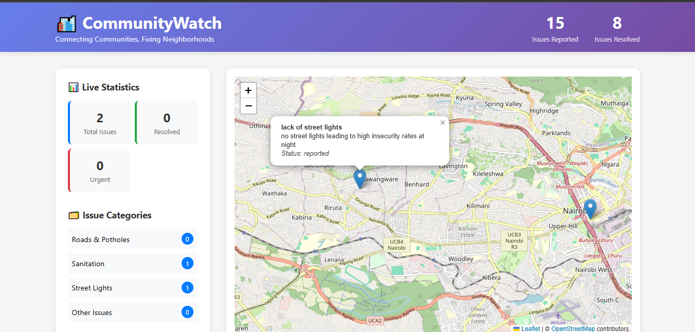

ABOUT ME
Hi, I'm Natalie Awinja Keli, a Computer Science student with aspirations to specialize in AI/ML engineering and data science. My goal is to acquire proficiency in building scalable, user-centered solutions that address real-world challenges.
I am currently skilled in foundational C, C++, and Python, with experience building front-end projects using HTML, CSS, and JavaScript. Proficient in database management with MySQL and version control with Git. Currently advancing my expertise through dedicated training in the MERN stack (MongoDB, Express.js, React, Node.js) to develop into a full-stack developer capable of building end-to-end web applications.
Technical Skills
Languages
- JavaScript
- Python
- HTML5
- CSS3
Frontend
- React
- Responsive Design
Backend & Databases
- Node.js
- Express.js
- MySQL
- MongoDB
Tools
- Git
- VS Code
Interests & Focus Areas
Full-Stack Engineering
Building dynamic, end-to-end web applications with the MERN stack. This encompasses creating seamless React front-ends, designing robust Express.js and Node.js APIs, and architecting efficient data layers with both MongoDB and MySQL to deliver scalable and user-centric solutions.
AI & Machine Learning
Exploring the development of intelligent systems that analyze data and learn patterns. I'm particularly fascinated by the practical application of Natural Language Processing (NLP) to extract meaningful insights and create innovative user experiences.
Building Impactful Technology
Driven by a passion for solving complex problems with elegant, data-informed solutions. I enjoy the process of deconstructing challenging problems and iterating on solutions that create meaningful user experiences through code.
Work Experience
Rapporteur
Grassroots Nest for Innovations and Change (GRiC)
June 2025 | Staff and Partners' Training Workshop
- Documented and synthesized complex discussions on gender transformative approaches and educational barriers into comprehensive session reports
- Facilitated daily recap sessions to reinforce key learnings and maintain participant engagement throughout the 4-day workshop
- Developed professional communication skills by delivering clear, structured summaries to diverse stakeholders
- Strengthened time management abilities while capturing real-time discussions and producing timely documentation
Education
Multimedia University of Kenya
BSc. Computer Science
September 2024 – Present
Relevant Coursework: Programming Fundamentals, Software Engineering, Data Structures & Algorithms, Discrete Mathematics, Computer Architecture
Power Learn Project (PLP)
Full Stack Software Development Certificate
July 2025 - November 2025
Technical Stack: HTML5, CSS3, JavaScript, Python, MySQL, Git, Deployment Tools, MERN Stack (MongoDB, Express.js, React, Node.js)
Alison Online
Python for Data Science Certification
Currently Enrolled
Focusing on data analysis, visualization, and machine learning fundamentals using Python libraries
Maryhill Girls High School
Kenya Certificate of Secondary Education
Completed: April 2022
Mean Grade: A– (Minus)
Certificate:
Download KCSE Certificate
For a detailed overview of my education background and experience, download my complete CV:
📜 Download My CVProjects
CommunityWatch - Full Stack Community Platform
Building a zone-based issue tracking platform that connects residents with local administrators to improve urban infrastructure.
Key Features:
- Precise location pinning system with real-time issue visualization
- Anonymous issue reporting with image upload
- Admin dashboard for issue management
- Community engagement through upvoting system
Tech Stack: MERN Stack, Leaflet.js, OpenStreetMap
Status: In Development | Expected Completion: November 2025
Collaboration: Developed with a friend as the final project for a Software Development Programme.
View Project on GitHubAgroAid - AI Powered Land Guardian
A FullStack AI powered platform that detects land degradation risks using satellite data and predictive analytics before they become visible to the human eye.
Key Features:
- Real-time land monitoring with color-coded risk maps
- AI-powered recommendations for specific problem areas
- Interactive chatbot for real-time agricultural solutions
- Prevention strategies and crop recommendations
Tech Stack: HTML, CSS, JavaScript, Leaflet.js, Node.js, Express.js, Python, RESTful APIs
Deployment: Vercel (Frontend), Render (Backend)
Collaboration: Developed with a friend as part of a Land ReGen Hackathon.
View Project on GitHubContact Me
Have a question, collaboration idea, or just want to connect? I'd love to hear from you!
You can email me directly at:
awinjanatalie77@gmail.com